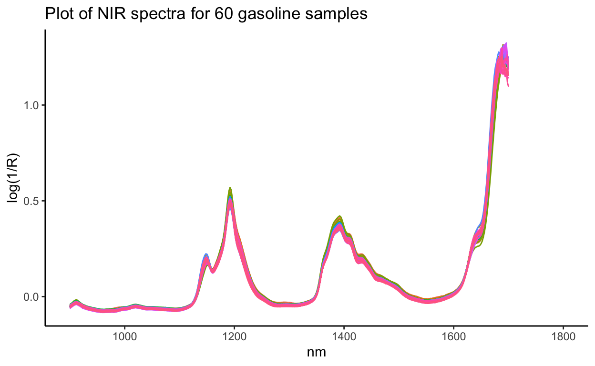
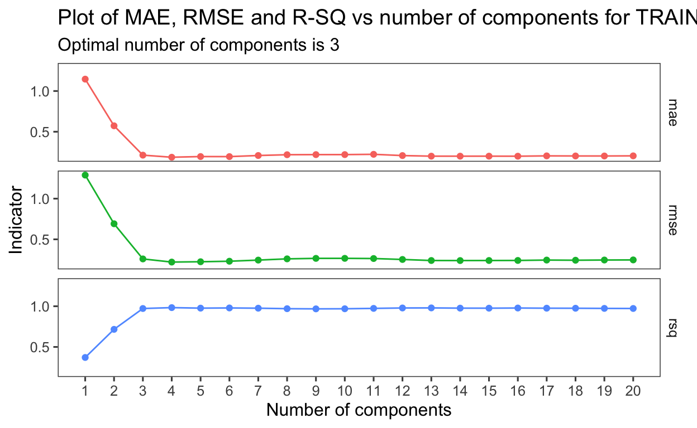
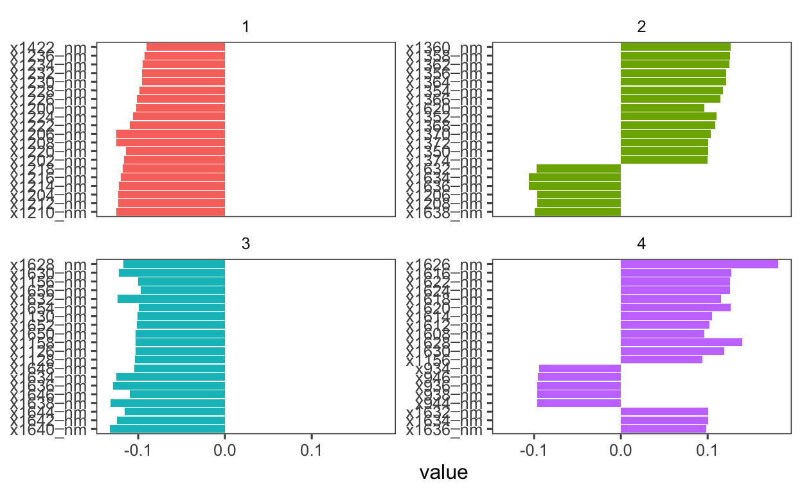

Predicting numerical outcomes using partial least squares on gasoline dataset
The partial least square (PLS) regression method may be used to predict one or more numerical Y outcome variable when the X variables are highly correlated. In the chemistry field, it is very useful for relating spectra to chemical properties.
The problem with using ordinary least square linear regression for such datasets is that when X variables are highly correlated, it is difficult to interpret coefficients of different X meaningfully, since they are all correlated.
PLS technique is also useful when the number of samples is lesser than the number of variables. It maximises the covariance of both X and Y to calculate scores (how much a particular object contributes to a latent variable) and loadings (variable coefficients used to define a component). For principal component regression (PCR), only X variables are taken into account. If the variability of X is not related to variability of Y, then PCR will have difficulty identifying a predictive relationship, when one might exist. It helps to uncover latent structures in the highly correlated X variables, so as to predict Y.
In a way, PLS is a supervised dimension reduction. It finds components that maximally summarise the variation of the predictors while simultaneiously requiring these components to have maximum correlation with the response.
The workflow below is for predicting one Y variable, using multiple X variables, on the gasoline NIR dataset. The outcome variable of interest is the octane number.
The data may also be visualized before modelling.
Split the dataset into training and testing dataset. The training dataset is used to build and tune the models, and the testing dataset is used to evaluate the model. Define a 10-fold cross validation dataset, from the training dataset. Resampling is useful if the sample size is small, to have a better bias-variance tradeoff (minimise over-fitting of model) for better predictive ability.
Preprocess the training dataset. Data would have to be imputed if there are missing values, and also normalised since PLS is using variance to understand dissimilarity in the X variables.
Train the model using the training dataset. In this case, the pls model is used. For PLS model, there is one tuning parameter, which is the number of components. The tune package will be used for tuning, and the data will be the 10-fold cross validation dataset.
Assess the training model using root mean square error (RMSE) and mean absolute error (MAE), as well as r-sq for accuracy.
Determine which variables are important in the model
Predict new data
This dataset is from the pls package, and has octane number (Y outcome variable), as well as NIR spectra of 60 gasoline samples.
data(gasoline)
data_plot <- cbind(gasoline, as.data.frame((unclass(gasoline$NIR)))) %>%
dplyr::select(-NIR) %>%
as_tibble() %>%
rowid_to_column() %>%
janitor::clean_names() %>%
pivot_longer(cols = starts_with("x"),
names_to = "wavelength",
values_to = "reflectance") %>%
mutate(wavelength_number = parse_number(wavelength))
data_plot %>%
ggplot(aes(x = wavelength_number, y = reflectance, col = factor(rowid))) +
geom_line(show.legend = F) +
labs(y = "log(1/R)",
x = "nm",
title = "Plot of NIR spectra for 60 gasoline samples") +
coord_cartesian(xlim = c(900, 1800)) +
theme_classic()

To use the dataset for modelling using the tidymodels framework, convert the data into a tidy tibble structure. The pls package requires that the data be provided as a matrix format, but for the tidymodels framework, the data should be in a tibble format for ease in creating plots and modelling.
gasoline_tidy <- cbind(gasoline, as.data.frame((unclass(gasoline$NIR)))) %>%
dplyr::select(-NIR) %>%
as_tibble() %>%
janitor::clean_names()
glimpse(gasoline_tidy) # 60 rows, 402 columns
Rows: 60
Columns: 402
$ octane <dbl> 85.30, 85.25, 88.45, 83.40, 87.90, 85.50, 88.90, 88…
$ x900_nm <dbl> -0.050193, -0.044227, -0.046867, -0.046705, -0.0508…
$ x902_nm <dbl> -0.045903, -0.039602, -0.041260, -0.042240, -0.0451…
$ x904_nm <dbl> -0.042187, -0.035673, -0.036979, -0.038561, -0.0410…
$ x906_nm <dbl> -0.037177, -0.030911, -0.031458, -0.034513, -0.0363…
$ x908_nm <dbl> -0.033348, -0.026675, -0.026520, -0.030206, -0.0327…
$ x910_nm <dbl> -0.031207, -0.023871, -0.023346, -0.027680, -0.0314…
$ x912_nm <dbl> -0.030036, -0.022571, -0.021392, -0.026042, -0.0314…
$ x914_nm <dbl> -0.031298, -0.025410, -0.024993, -0.028280, -0.0346…
$ x916_nm <dbl> -0.034217, -0.028960, -0.029309, -0.030920, -0.0377…
$ x918_nm <dbl> -0.036012, -0.032740, -0.033920, -0.034012, -0.0407…
$ x920_nm <dbl> -0.039792, -0.036683, -0.038539, -0.037082, -0.0440…
$ x922_nm <dbl> -0.043037, -0.040169, -0.042571, -0.040444, -0.0473…
$ x924_nm <dbl> -0.047313, -0.044899, -0.047511, -0.044858, -0.0514…
$ x926_nm <dbl> -0.048103, -0.046266, -0.048487, -0.046544, -0.0520…
$ x928_nm <dbl> -0.050627, -0.048627, -0.050455, -0.048978, -0.0540…
$ x930_nm <dbl> -0.053830, -0.052014, -0.053913, -0.052483, -0.0571…
$ x932_nm <dbl> -0.054604, -0.053635, -0.055195, -0.054078, -0.0583…
$ x934_nm <dbl> -0.056676, -0.055454, -0.056713, -0.055723, -0.0599…
$ x936_nm <dbl> -0.058428, -0.056777, -0.057447, -0.056999, -0.0606…
$ x938_nm <dbl> -0.060644, -0.059331, -0.059620, -0.059409, -0.0628…
$ x940_nm <dbl> -0.061712, -0.060518, -0.060656, -0.060543, -0.0637…
$ x942_nm <dbl> -0.063148, -0.062084, -0.061767, -0.061868, -0.0650…
$ x944_nm <dbl> -0.064480, -0.063331, -0.062859, -0.062899, -0.0657…
$ x946_nm <dbl> -0.065987, -0.065059, -0.064668, -0.064401, -0.0672…
$ x948_nm <dbl> -0.066894, -0.065536, -0.065566, -0.064814, -0.0679…
$ x950_nm <dbl> -0.068201, -0.066877, -0.066890, -0.065989, -0.0692…
$ x952_nm <dbl> -0.069434, -0.067899, -0.068397, -0.067180, -0.0707…
$ x954_nm <dbl> -0.069594, -0.067662, -0.068439, -0.066987, -0.0707…
$ x956_nm <dbl> -0.071336, -0.069050, -0.070171, -0.068829, -0.0724…
$ x958_nm <dbl> -0.071208, -0.068497, -0.070077, -0.069063, -0.0722…
$ x960_nm <dbl> -0.071454, -0.068434, -0.070639, -0.069995, -0.0726…
$ x962_nm <dbl> -0.071469, -0.067953, -0.070578, -0.070687, -0.0726…
$ x964_nm <dbl> -0.071631, -0.067061, -0.070137, -0.070725, -0.0722…
$ x966_nm <dbl> -0.070886, -0.066073, -0.069803, -0.070661, -0.0718…
$ x968_nm <dbl> -0.071010, -0.065564, -0.069738, -0.071043, -0.0718…
$ x970_nm <dbl> -0.070609, -0.065335, -0.070031, -0.071324, -0.0718…
$ x972_nm <dbl> -0.070464, -0.064051, -0.069496, -0.070894, -0.0714…
$ x974_nm <dbl> -0.070433, -0.063666, -0.069789, -0.071157, -0.0717…
$ x976_nm <dbl> -0.069957, -0.062513, -0.069002, -0.070798, -0.0711…
$ x978_nm <dbl> -0.070208, -0.061955, -0.069288, -0.071120, -0.0713…
$ x980_nm <dbl> -0.070523, -0.060906, -0.069398, -0.071266, -0.0715…
$ x982_nm <dbl> -0.070252, -0.059413, -0.068613, -0.070540, -0.0707…
$ x984_nm <dbl> -0.069360, -0.058242, -0.067675, -0.069737, -0.0698…
$ x986_nm <dbl> -0.068338, -0.056855, -0.066685, -0.068637, -0.0687…
$ x988_nm <dbl> -0.066991, -0.055982, -0.065196, -0.067211, -0.0673…
$ x990_nm <dbl> -0.065362, -0.055107, -0.063317, -0.065586, -0.0655…
$ x992_nm <dbl> -0.063971, -0.054763, -0.061604, -0.064064, -0.0641…
$ x994_nm <dbl> -0.062210, -0.054189, -0.059695, -0.062089, -0.0624…
$ x996_nm <dbl> -0.060678, -0.054361, -0.058403, -0.060639, -0.0612…
$ x998_nm <dbl> -0.059275, -0.054014, -0.056868, -0.059018, -0.0598…
$ x1000_nm <dbl> -0.059126, -0.054822, -0.056419, -0.058185, -0.0595…
$ x1002_nm <dbl> -0.058903, -0.055303, -0.056021, -0.057415, -0.0592…
$ x1004_nm <dbl> -0.058488, -0.055101, -0.055192, -0.056311, -0.0583…
$ x1006_nm <dbl> -0.057291, -0.054473, -0.053844, -0.054969, -0.0570…
$ x1008_nm <dbl> -0.055408, -0.053119, -0.051961, -0.052664, -0.0552…
$ x1010_nm <dbl> -0.053862, -0.051626, -0.050363, -0.050925, -0.0537…
$ x1012_nm <dbl> -0.051421, -0.048967, -0.047896, -0.048186, -0.0516…
$ x1014_nm <dbl> -0.050485, -0.047722, -0.046456, -0.046844, -0.0508…
$ x1016_nm <dbl> -0.048349, -0.045717, -0.044870, -0.045207, -0.0492…
$ x1018_nm <dbl> -0.047586, -0.044365, -0.044068, -0.044741, -0.0484…
$ x1020_nm <dbl> -0.046898, -0.043336, -0.043379, -0.044397, -0.0481…
$ x1022_nm <dbl> -0.047726, -0.043581, -0.044227, -0.044697, -0.0487…
$ x1024_nm <dbl> -0.048686, -0.044036, -0.045469, -0.045614, -0.0498…
$ x1026_nm <dbl> -0.049626, -0.044856, -0.046493, -0.046452, -0.0506…
$ x1028_nm <dbl> -0.050714, -0.046041, -0.048213, -0.047669, -0.0520…
$ x1030_nm <dbl> -0.051541, -0.046858, -0.049097, -0.048569, -0.0528…
$ x1032_nm <dbl> -0.052976, -0.048652, -0.050967, -0.050055, -0.0546…
$ x1034_nm <dbl> -0.054019, -0.049853, -0.052127, -0.051178, -0.0555…
$ x1036_nm <dbl> -0.055507, -0.051562, -0.053886, -0.052781, -0.0569…
$ x1038_nm <dbl> -0.056386, -0.052526, -0.054432, -0.053594, -0.0576…
$ x1040_nm <dbl> -0.056779, -0.053738, -0.055172, -0.054460, -0.0580…
$ x1042_nm <dbl> -0.056876, -0.054069, -0.055257, -0.054997, -0.0582…
$ x1044_nm <dbl> -0.056439, -0.053925, -0.054866, -0.055201, -0.0578…
$ x1046_nm <dbl> -0.056708, -0.054880, -0.055286, -0.055934, -0.0585…
$ x1048_nm <dbl> -0.056432, -0.054857, -0.055256, -0.055994, -0.0583…
$ x1050_nm <dbl> -0.056974, -0.055695, -0.055922, -0.056841, -0.0590…
$ x1052_nm <dbl> -0.057091, -0.055656, -0.055649, -0.056687, -0.0586…
$ x1054_nm <dbl> -0.057541, -0.056352, -0.056044, -0.057192, -0.0590…
$ x1056_nm <dbl> -0.057746, -0.056501, -0.056164, -0.057521, -0.0589…
$ x1058_nm <dbl> -0.058387, -0.057275, -0.056653, -0.058097, -0.0592…
$ x1060_nm <dbl> -0.058997, -0.057927, -0.057349, -0.058708, -0.0597…
$ x1062_nm <dbl> -0.058975, -0.058044, -0.057620, -0.058940, -0.0601…
$ x1064_nm <dbl> -0.059624, -0.058311, -0.058109, -0.059339, -0.0607…
$ x1066_nm <dbl> -0.059737, -0.058253, -0.057978, -0.059002, -0.0607…
$ x1068_nm <dbl> -0.060552, -0.058841, -0.058726, -0.059353, -0.0617…
$ x1070_nm <dbl> -0.060416, -0.058138, -0.058442, -0.058568, -0.0615…
$ x1072_nm <dbl> -0.061099, -0.058603, -0.058857, -0.058309, -0.0623…
$ x1074_nm <dbl> -0.060784, -0.058309, -0.058779, -0.057284, -0.0621…
$ x1076_nm <dbl> -0.061292, -0.058444, -0.059351, -0.057273, -0.0625…
$ x1078_nm <dbl> -0.061811, -0.058993, -0.060286, -0.057433, -0.0631…
$ x1080_nm <dbl> -0.061852, -0.059121, -0.060681, -0.057911, -0.0634…
$ x1082_nm <dbl> -0.062380, -0.059445, -0.061533, -0.059303, -0.0640…
$ x1084_nm <dbl> -0.062816, -0.059475, -0.061879, -0.060453, -0.0642…
$ x1086_nm <dbl> -0.063620, -0.060274, -0.062840, -0.062042, -0.0651…
$ x1088_nm <dbl> -0.063730, -0.060256, -0.063150, -0.062812, -0.0654…
$ x1090_nm <dbl> -0.064291, -0.060515, -0.063667, -0.063620, -0.0658…
$ x1092_nm <dbl> -0.064209, -0.060839, -0.063744, -0.063369, -0.0657…
$ x1094_nm <dbl> -0.064162, -0.060784, -0.063969, -0.063106, -0.0659…
$ x1096_nm <dbl> -0.063681, -0.060401, -0.063588, -0.062210, -0.0654…
$ x1098_nm <dbl> -0.062757, -0.059631, -0.062893, -0.061071, -0.0646…
$ x1100_nm <dbl> -0.061833, -0.058887, -0.062346, -0.060476, -0.0637…
$ x1102_nm <dbl> -0.060653, -0.057861, -0.060954, -0.059613, -0.0623…
$ x1104_nm <dbl> -0.059872, -0.057174, -0.060277, -0.059053, -0.0614…
$ x1106_nm <dbl> -0.058221, -0.055943, -0.058933, -0.057879, -0.0596…
$ x1108_nm <dbl> -0.057000, -0.054586, -0.057725, -0.056993, -0.0583…
$ x1110_nm <dbl> -0.054962, -0.052730, -0.056403, -0.055674, -0.0566…
$ x1112_nm <dbl> -0.052726, -0.050650, -0.054639, -0.053633, -0.0544…
$ x1114_nm <dbl> -0.050188, -0.047988, -0.052604, -0.051368, -0.0521…
$ x1116_nm <dbl> -0.047313, -0.045184, -0.050002, -0.048753, -0.0490…
$ x1118_nm <dbl> -0.044383, -0.042775, -0.047952, -0.046565, -0.0458…
$ x1120_nm <dbl> -0.040658, -0.039567, -0.044838, -0.043878, -0.0415…
$ x1122_nm <dbl> -0.036981, -0.036483, -0.041595, -0.041106, -0.0366…
$ x1124_nm <dbl> -0.030389, -0.031762, -0.036552, -0.036145, -0.0297…
$ x1126_nm <dbl> -0.022454, -0.026061, -0.030222, -0.029643, -0.0205…
$ x1128_nm <dbl> -0.011760, -0.017961, -0.021030, -0.020369, -0.0080…
$ x1130_nm <dbl> 0.000941, -0.008352, -0.010311, -0.009442, 0.006771…
$ x1132_nm <dbl> 0.018067, 0.004104, 0.003633, 0.005123, 0.026072, 0…
$ x1134_nm <dbl> 0.039563, 0.020129, 0.021227, 0.023279, 0.050595, 0…
$ x1136_nm <dbl> 0.065490, 0.040174, 0.043017, 0.045674, 0.080282, 0…
$ x1138_nm <dbl> 0.093330, 0.061190, 0.065780, 0.069009, 0.111046, 0…
$ x1140_nm <dbl> 0.119886, 0.082808, 0.088740, 0.092430, 0.140255, 0…
$ x1142_nm <dbl> 0.143335, 0.103309, 0.110123, 0.113654, 0.162922, 0…
$ x1144_nm <dbl> 0.161862, 0.121239, 0.128801, 0.131457, 0.178850, 0…
$ x1146_nm <dbl> 0.178692, 0.139799, 0.147827, 0.148927, 0.192453, 0…
$ x1148_nm <dbl> 0.190440, 0.154684, 0.163220, 0.162499, 0.200921, 0…
$ x1150_nm <dbl> 0.194380, 0.163895, 0.171823, 0.169830, 0.200736, 0…
$ x1152_nm <dbl> 0.187846, 0.163702, 0.170286, 0.168042, 0.189637, 0…
$ x1154_nm <dbl> 0.173436, 0.155861, 0.160042, 0.159366, 0.170796, 0…
$ x1156_nm <dbl> 0.158487, 0.146830, 0.147558, 0.149124, 0.152340, 0…
$ x1158_nm <dbl> 0.146299, 0.139954, 0.137904, 0.141988, 0.138688, 0…
$ x1160_nm <dbl> 0.143034, 0.140520, 0.136222, 0.142149, 0.133949, 0…
$ x1162_nm <dbl> 0.146884, 0.147677, 0.142161, 0.148574, 0.137171, 0…
$ x1164_nm <dbl> 0.156093, 0.159739, 0.153683, 0.159490, 0.146438, 0…
$ x1166_nm <dbl> 0.167857, 0.174511, 0.168846, 0.173304, 0.159196, 0…
$ x1168_nm <dbl> 0.179468, 0.189393, 0.184297, 0.186928, 0.172705, 0…
$ x1170_nm <dbl> 0.192422, 0.204829, 0.201057, 0.201306, 0.187194, 0…
$ x1172_nm <dbl> 0.205774, 0.222001, 0.219339, 0.217320, 0.202939, 0…
$ x1174_nm <dbl> 0.222009, 0.240784, 0.238474, 0.235025, 0.221091, 0…
$ x1176_nm <dbl> 0.238851, 0.259705, 0.257398, 0.253360, 0.239527, 0…
$ x1178_nm <dbl> 0.257624, 0.279918, 0.277868, 0.273140, 0.260289, 0…
$ x1180_nm <dbl> 0.282144, 0.305844, 0.303828, 0.298527, 0.286929, 0…
$ x1182_nm <dbl> 0.316637, 0.342649, 0.340386, 0.334143, 0.324194, 0…
$ x1184_nm <dbl> 0.360689, 0.390617, 0.388889, 0.379790, 0.370256, 0…
$ x1186_nm <dbl> 0.410005, 0.445219, 0.444171, 0.431122, 0.418339, 0…
$ x1188_nm <dbl> 0.454409, 0.497316, 0.497294, 0.478623, 0.458811, 0…
$ x1190_nm <dbl> 0.485965, 0.535230, 0.535431, 0.512772, 0.480722, 0…
$ x1192_nm <dbl> 0.497682, 0.552865, 0.552290, 0.529281, 0.483581, 0…
$ x1194_nm <dbl> 0.489535, 0.545858, 0.541118, 0.523347, 0.465097, 0…
$ x1196_nm <dbl> 0.466098, 0.516133, 0.504049, 0.497873, 0.432696, 0…
$ x1198_nm <dbl> 0.432583, 0.474097, 0.453667, 0.462310, 0.392652, 0…
$ x1200_nm <dbl> 0.394805, 0.429533, 0.400454, 0.423781, 0.351462, 0…
$ x1202_nm <dbl> 0.359732, 0.388781, 0.353163, 0.387603, 0.315084, 0…
$ x1204_nm <dbl> 0.331966, 0.357836, 0.318767, 0.359001, 0.288042, 0…
$ x1206_nm <dbl> 0.309186, 0.334257, 0.293785, 0.336412, 0.267363, 0…
$ x1208_nm <dbl> 0.292567, 0.316834, 0.276645, 0.319126, 0.251579, 0…
$ x1210_nm <dbl> 0.275393, 0.300208, 0.260872, 0.301999, 0.235251, 0…
$ x1212_nm <dbl> 0.255452, 0.280041, 0.242538, 0.282530, 0.216596, 0…
$ x1214_nm <dbl> 0.235247, 0.259029, 0.224122, 0.261341, 0.198460, 0…
$ x1216_nm <dbl> 0.213967, 0.237029, 0.206128, 0.239522, 0.181406, 0…
$ x1218_nm <dbl> 0.192011, 0.215364, 0.188049, 0.218119, 0.165114, 0…
$ x1220_nm <dbl> 0.170424, 0.192902, 0.169174, 0.195463, 0.148187, 0…
$ x1222_nm <dbl> 0.150943, 0.171982, 0.152376, 0.174744, 0.133288, 0…
$ x1224_nm <dbl> 0.132428, 0.151256, 0.136216, 0.154083, 0.118446, 0…
$ x1226_nm <dbl> 0.115921, 0.133448, 0.121756, 0.135921, 0.105215, 0…
$ x1228_nm <dbl> 0.099535, 0.115749, 0.106574, 0.118325, 0.090738, 0…
$ x1230_nm <dbl> 0.084481, 0.099265, 0.090796, 0.101493, 0.076775, 0…
$ x1232_nm <dbl> 0.071254, 0.084244, 0.076286, 0.086168, 0.063483, 0…
$ x1234_nm <dbl> 0.058049, 0.070886, 0.062592, 0.072287, 0.050650, 0…
$ x1236_nm <dbl> 0.047446, 0.060095, 0.051793, 0.061218, 0.040134, 0…
$ x1238_nm <dbl> 0.036880, 0.049378, 0.041423, 0.050044, 0.030024, 0…
$ x1240_nm <dbl> 0.029082, 0.040630, 0.033518, 0.040826, 0.021975, 0…
$ x1242_nm <dbl> 0.021789, 0.032988, 0.026652, 0.032597, 0.015352, 0…
$ x1244_nm <dbl> 0.016038, 0.026985, 0.021066, 0.026030, 0.010021, 0…
$ x1246_nm <dbl> 0.011251, 0.021400, 0.016164, 0.020097, 0.005572, 0…
$ x1248_nm <dbl> 0.006186, 0.016041, 0.011051, 0.014526, 0.001400, 0…
$ x1250_nm <dbl> 0.003116, 0.012094, 0.007728, 0.010441, -0.001737, …
$ x1252_nm <dbl> -0.000998, 0.007511, 0.003719, 0.005578, -0.005442,…
$ x1254_nm <dbl> -0.004703, 0.003694, -0.000068, 0.001684, -0.008756…
$ x1256_nm <dbl> -0.009270, -0.001214, -0.004753, -0.002925, -0.0128…
$ x1258_nm <dbl> -0.012907, -0.005412, -0.008519, -0.007083, -0.0162…
$ x1260_nm <dbl> -0.017234, -0.010057, -0.012552, -0.011555, -0.0201…
$ x1262_nm <dbl> -0.020832, -0.014084, -0.016265, -0.015370, -0.0235…
$ x1264_nm <dbl> -0.024051, -0.017764, -0.019766, -0.018619, -0.0270…
$ x1266_nm <dbl> -0.027297, -0.021488, -0.023338, -0.021719, -0.0301…
$ x1268_nm <dbl> -0.029792, -0.024172, -0.025883, -0.023654, -0.0323…
$ x1270_nm <dbl> -0.032400, -0.027224, -0.029186, -0.025991, -0.0353…
$ x1272_nm <dbl> -0.033746, -0.029156, -0.031037, -0.027169, -0.0369…
$ x1274_nm <dbl> -0.035721, -0.031021, -0.033466, -0.028784, -0.0383…
$ x1276_nm <dbl> -0.036701, -0.032030, -0.034469, -0.029554, -0.0394…
$ x1278_nm <dbl> -0.037363, -0.032565, -0.035675, -0.030701, -0.0404…
$ x1280_nm <dbl> -0.037377, -0.032049, -0.035766, -0.031122, -0.0405…
$ x1282_nm <dbl> -0.037489, -0.031394, -0.036086, -0.031775, -0.0405…
$ x1284_nm <dbl> -0.037695, -0.031097, -0.036513, -0.032641, -0.0406…
$ x1286_nm <dbl> -0.036906, -0.029836, -0.036003, -0.032724, -0.0402…
$ x1288_nm <dbl> -0.037094, -0.029678, -0.036171, -0.033748, -0.0403…
$ x1290_nm <dbl> -0.036752, -0.028968, -0.035911, -0.034132, -0.0398…
$ x1292_nm <dbl> -0.037211, -0.029269, -0.036362, -0.035013, -0.0398…
$ x1294_nm <dbl> -0.037308, -0.029262, -0.036318, -0.035620, -0.0397…
$ x1296_nm <dbl> -0.037673, -0.029877, -0.036997, -0.036407, -0.0400…
$ x1298_nm <dbl> -0.037877, -0.030030, -0.037092, -0.036595, -0.0400…
$ x1300_nm <dbl> -0.038212, -0.030565, -0.037218, -0.036742, -0.0400…
$ x1302_nm <dbl> -0.038426, -0.031404, -0.037411, -0.037076, -0.0401…
$ x1304_nm <dbl> -0.038534, -0.032320, -0.037429, -0.037230, -0.0403…
$ x1306_nm <dbl> -0.039103, -0.033693, -0.038010, -0.037877, -0.0411…
$ x1308_nm <dbl> -0.038933, -0.034155, -0.037523, -0.037530, -0.0406…
$ x1310_nm <dbl> -0.039611, -0.035496, -0.038127, -0.038428, -0.0415…
$ x1312_nm <dbl> -0.039168, -0.035629, -0.037544, -0.037948, -0.0407…
$ x1314_nm <dbl> -0.038598, -0.035932, -0.037255, -0.037560, -0.0402…
$ x1316_nm <dbl> -0.037733, -0.035289, -0.036148, -0.036566, -0.0390…
$ x1318_nm <dbl> -0.037027, -0.034887, -0.035291, -0.035762, -0.0379…
$ x1320_nm <dbl> -0.035891, -0.034467, -0.034674, -0.035156, -0.0374…
$ x1322_nm <dbl> -0.034290, -0.033427, -0.033358, -0.033697, -0.0361…
$ x1324_nm <dbl> -0.033224, -0.032634, -0.032758, -0.032653, -0.0353…
$ x1326_nm <dbl> -0.031475, -0.030815, -0.031228, -0.030570, -0.0334…
$ x1328_nm <dbl> -0.030071, -0.029493, -0.030097, -0.028914, -0.0324…
$ x1330_nm <dbl> -0.028086, -0.027298, -0.027881, -0.026203, -0.0302…
$ x1332_nm <dbl> -0.026779, -0.026081, -0.026697, -0.024685, -0.0290…
$ x1334_nm <dbl> -0.024450, -0.024199, -0.024809, -0.022470, -0.0267…
$ x1336_nm <dbl> -0.022709, -0.022546, -0.022950, -0.020930, -0.0245…
$ x1338_nm <dbl> -0.020088, -0.020154, -0.020248, -0.018910, -0.0215…
$ x1340_nm <dbl> -0.016814, -0.017032, -0.016845, -0.016121, -0.0179…
$ x1342_nm <dbl> -0.013638, -0.013717, -0.013423, -0.013279, -0.0139…
$ x1344_nm <dbl> -0.008755, -0.008264, -0.007559, -0.008334, -0.0080…
$ x1346_nm <dbl> -0.003402, -0.002064, -0.000991, -0.003372, -0.0018…
$ x1348_nm <dbl> 0.004585, 0.007304, 0.008786, 0.004753, 0.007269, 0…
$ x1350_nm <dbl> 0.015708, 0.020121, 0.022739, 0.016161, 0.019779, 0…
$ x1352_nm <dbl> 0.032342, 0.039083, 0.043209, 0.033429, 0.038201, 0…
$ x1354_nm <dbl> 0.055075, 0.064193, 0.069797, 0.056411, 0.062477, 0…
$ x1356_nm <dbl> 0.083261, 0.095086, 0.102595, 0.085082, 0.092206, 0…
$ x1358_nm <dbl> 0.114275, 0.128027, 0.137954, 0.116397, 0.123556, 0…
$ x1360_nm <dbl> 0.142234, 0.158800, 0.169100, 0.145471, 0.151961, 0…
$ x1362_nm <dbl> 0.165117, 0.183265, 0.194530, 0.168918, 0.174343, 0…
$ x1364_nm <dbl> 0.181014, 0.201249, 0.212629, 0.185935, 0.189944, 0…
$ x1366_nm <dbl> 0.194140, 0.216701, 0.227677, 0.200819, 0.202222, 0…
$ x1368_nm <dbl> 0.207728, 0.232922, 0.243204, 0.215868, 0.215936, 0…
$ x1370_nm <dbl> 0.225084, 0.252380, 0.262941, 0.234213, 0.233155, 0…
$ x1372_nm <dbl> 0.245205, 0.274944, 0.285764, 0.255771, 0.254445, 0…
$ x1374_nm <dbl> 0.267331, 0.298853, 0.309733, 0.279190, 0.277749, 0…
$ x1376_nm <dbl> 0.290558, 0.322715, 0.333065, 0.303732, 0.301495, 0…
$ x1378_nm <dbl> 0.311237, 0.342958, 0.352530, 0.325323, 0.320695, 0…
$ x1380_nm <dbl> 0.328961, 0.360426, 0.369372, 0.344871, 0.336187, 0…
$ x1382_nm <dbl> 0.341901, 0.372804, 0.380216, 0.359555, 0.345160, 0…
$ x1384_nm <dbl> 0.350544, 0.381960, 0.387849, 0.370893, 0.350677, 0…
$ x1386_nm <dbl> 0.357751, 0.389191, 0.394677, 0.378461, 0.355522, 0…
$ x1388_nm <dbl> 0.364172, 0.397112, 0.402078, 0.386247, 0.362320, 0…
$ x1390_nm <dbl> 0.370471, 0.403062, 0.408582, 0.392268, 0.368313, 0…
$ x1392_nm <dbl> 0.373154, 0.406006, 0.410932, 0.393815, 0.370052, 0…
$ x1394_nm <dbl> 0.368176, 0.401295, 0.406170, 0.388471, 0.365085, 0…
$ x1396_nm <dbl> 0.356007, 0.389064, 0.393839, 0.376881, 0.352979, 0…
$ x1398_nm <dbl> 0.341120, 0.373591, 0.376215, 0.360814, 0.337215, 0…
$ x1400_nm <dbl> 0.325587, 0.356204, 0.357096, 0.344653, 0.321339, 0…
$ x1402_nm <dbl> 0.313571, 0.342050, 0.340687, 0.331744, 0.308459, 0…
$ x1404_nm <dbl> 0.306847, 0.332780, 0.329190, 0.323812, 0.299508, 0…
$ x1406_nm <dbl> 0.305310, 0.329005, 0.322999, 0.321500, 0.295653, 0…
$ x1408_nm <dbl> 0.304471, 0.328951, 0.321164, 0.323119, 0.295204, 0…
$ x1410_nm <dbl> 0.304125, 0.328051, 0.319110, 0.322928, 0.292860, 0…
$ x1412_nm <dbl> 0.298698, 0.322452, 0.311924, 0.317972, 0.286862, 0…
$ x1414_nm <dbl> 0.285589, 0.308979, 0.298671, 0.305534, 0.274217, 0…
$ x1416_nm <dbl> 0.267933, 0.290704, 0.280373, 0.288311, 0.257335, 0…
$ x1418_nm <dbl> 0.247573, 0.269241, 0.258819, 0.267978, 0.237130, 0…
$ x1420_nm <dbl> 0.229774, 0.249374, 0.238800, 0.248524, 0.219594, 0…
$ x1422_nm <dbl> 0.215690, 0.233860, 0.222677, 0.232934, 0.205760, 0…
$ x1424_nm <dbl> 0.207192, 0.224821, 0.213798, 0.223277, 0.197859, 0…
$ x1426_nm <dbl> 0.202051, 0.220504, 0.209824, 0.217777, 0.195243, 0…
$ x1428_nm <dbl> 0.201819, 0.220685, 0.210649, 0.216610, 0.196015, 0…
$ x1430_nm <dbl> 0.202353, 0.222163, 0.212908, 0.216723, 0.197585, 0…
$ x1432_nm <dbl> 0.201612, 0.222347, 0.214331, 0.216083, 0.198133, 0…
$ x1434_nm <dbl> 0.199291, 0.221434, 0.214048, 0.214255, 0.196885, 0…
$ x1436_nm <dbl> 0.193770, 0.215752, 0.209266, 0.208305, 0.190623, 0…
$ x1438_nm <dbl> 0.186669, 0.209041, 0.202558, 0.201097, 0.184152, 0…
$ x1440_nm <dbl> 0.178426, 0.200297, 0.193675, 0.192070, 0.175524, 0…
$ x1442_nm <dbl> 0.171231, 0.192172, 0.185359, 0.183795, 0.167989, 0…
$ x1444_nm <dbl> 0.164144, 0.183974, 0.176963, 0.176042, 0.159801, 0…
$ x1446_nm <dbl> 0.157259, 0.175816, 0.169181, 0.168643, 0.152625, 0…
$ x1448_nm <dbl> 0.149194, 0.167254, 0.159964, 0.160181, 0.144600, 0…
$ x1450_nm <dbl> 0.139789, 0.156358, 0.149142, 0.150664, 0.134160, 0…
$ x1452_nm <dbl> 0.130173, 0.146486, 0.139082, 0.141494, 0.125008, 0…
$ x1454_nm <dbl> 0.120745, 0.137275, 0.129739, 0.133234, 0.115873, 0…
$ x1456_nm <dbl> 0.113733, 0.130180, 0.122022, 0.126515, 0.109185, 0…
$ x1458_nm <dbl> 0.107519, 0.123365, 0.116297, 0.120700, 0.103171, 0…
$ x1460_nm <dbl> 0.103765, 0.119438, 0.113173, 0.117645, 0.100027, 0…
$ x1462_nm <dbl> 0.101175, 0.116286, 0.110954, 0.115052, 0.098121, 0…
$ x1464_nm <dbl> 0.100106, 0.114482, 0.110095, 0.113629, 0.097745, 0…
$ x1466_nm <dbl> 0.099068, 0.112444, 0.109058, 0.112397, 0.097652, 0…
$ x1468_nm <dbl> 0.097315, 0.108714, 0.106665, 0.108961, 0.096193, 0…
$ x1470_nm <dbl> 0.095724, 0.106003, 0.104405, 0.106436, 0.095738, 0…
$ x1472_nm <dbl> 0.093093, 0.102389, 0.100941, 0.102798, 0.093557, 0…
$ x1474_nm <dbl> 0.090002, 0.098235, 0.097474, 0.098874, 0.090709, 0…
$ x1476_nm <dbl> 0.086612, 0.093959, 0.093497, 0.094944, 0.087039, 0…
$ x1478_nm <dbl> 0.084922, 0.091774, 0.091673, 0.092621, 0.085000, 0…
$ x1480_nm <dbl> 0.080780, 0.087636, 0.087493, 0.088422, 0.080375, 0…
$ x1482_nm <dbl> 0.077849, 0.084646, 0.084593, 0.084868, 0.077113, 0…
$ x1484_nm <dbl> 0.074536, 0.082097, 0.081474, 0.081632, 0.073986, 0…
$ x1486_nm <dbl> 0.070910, 0.079089, 0.078340, 0.078056, 0.069980, 0…
$ x1488_nm <dbl> 0.068700, 0.077735, 0.076682, 0.076356, 0.067515, 0…
$ x1490_nm <dbl> 0.064584, 0.074444, 0.073916, 0.072892, 0.064092, 0…
$ x1492_nm <dbl> 0.061726, 0.071813, 0.071351, 0.069921, 0.060768, 0…
$ x1494_nm <dbl> 0.057395, 0.068586, 0.068287, 0.066060, 0.057105, 0…
$ x1496_nm <dbl> 0.053704, 0.065580, 0.065568, 0.062555, 0.054163, 0…
$ x1498_nm <dbl> 0.049329, 0.061501, 0.061216, 0.057895, 0.050508, 0…
$ x1500_nm <dbl> 0.044695, 0.056740, 0.055821, 0.052995, 0.045830, 0…
$ x1502_nm <dbl> 0.039937, 0.051068, 0.049529, 0.047908, 0.040213, 0…
$ x1504_nm <dbl> 0.034641, 0.045104, 0.043150, 0.042637, 0.034258, 0…
$ x1506_nm <dbl> 0.030164, 0.040192, 0.037184, 0.038187, 0.029202, 0…
$ x1508_nm <dbl> 0.024898, 0.034145, 0.030828, 0.032880, 0.023555, 0…
$ x1510_nm <dbl> 0.021588, 0.029970, 0.026308, 0.029345, 0.019996, 0…
$ x1512_nm <dbl> 0.017102, 0.024131, 0.020805, 0.024026, 0.015186, 0…
$ x1514_nm <dbl> 0.014860, 0.020670, 0.016907, 0.020904, 0.012201, 0…
$ x1516_nm <dbl> 0.010854, 0.016931, 0.013194, 0.017431, 0.008836, 0…
$ x1518_nm <dbl> 0.008205, 0.013083, 0.009759, 0.014136, 0.005561, 0…
$ x1520_nm <dbl> 0.005869, 0.010199, 0.007271, 0.011749, 0.003463, 0…
$ x1522_nm <dbl> 0.003920, 0.007926, 0.004796, 0.009634, 0.001051, 0…
$ x1524_nm <dbl> 0.002107, 0.005733, 0.002720, 0.007699, -0.001164, …
$ x1526_nm <dbl> -0.000203, 0.002833, 0.000243, 0.005545, -0.003490,…
$ x1528_nm <dbl> -0.001072, 0.001596, -0.001196, 0.004693, -0.004459…
$ x1530_nm <dbl> -0.003325, -0.000928, -0.003965, 0.002553, -0.00740…
$ x1532_nm <dbl> -0.004707, -0.002545, -0.005704, 0.001494, -0.00901…
$ x1534_nm <dbl> -0.006635, -0.003656, -0.007156, -0.000102, -0.0101…
$ x1536_nm <dbl> -0.008403, -0.006217, -0.009860, -0.003056, -0.0127…
$ x1538_nm <dbl> -0.009317, -0.006885, -0.010959, -0.004391, -0.0138…
$ x1540_nm <dbl> -0.011351, -0.008307, -0.012194, -0.006868, -0.0151…
$ x1542_nm <dbl> -0.012280, -0.009142, -0.013605, -0.008665, -0.0158…
$ x1544_nm <dbl> -0.013474, -0.010409, -0.014564, -0.010355, -0.0171…
$ x1546_nm <dbl> -0.014453, -0.010983, -0.015313, -0.011261, -0.0175…
$ x1548_nm <dbl> -0.015262, -0.012033, -0.015723, -0.011896, -0.0181…
$ x1550_nm <dbl> -0.015588, -0.012020, -0.015263, -0.011357, -0.0179…
$ x1552_nm <dbl> -0.016349, -0.013442, -0.016537, -0.012562, -0.0191…
$ x1554_nm <dbl> -0.016028, -0.012709, -0.015581, -0.011408, -0.0183…
$ x1556_nm <dbl> -0.016209, -0.011563, -0.014147, -0.010164, -0.0173…
$ x1558_nm <dbl> -0.015985, -0.010432, -0.013280, -0.009194, -0.0168…
$ x1560_nm <dbl> -0.015483, -0.010091, -0.013291, -0.009642, -0.0167…
$ x1562_nm <dbl> -0.014216, -0.007960, -0.012268, -0.008700, -0.0155…
$ x1564_nm <dbl> -0.013790, -0.006697, -0.011176, -0.007899, -0.0145…
$ x1566_nm <dbl> -0.013844, -0.005367, -0.010897, -0.006986, -0.0146…
$ x1568_nm <dbl> -0.011773, -0.003432, -0.009383, -0.005475, -0.0131…
$ x1570_nm <dbl> -0.010432, -0.002665, -0.008983, -0.004838, -0.0130…
$ x1572_nm <dbl> -0.009606, -0.001307, -0.007542, -0.003785, -0.0112…
$ x1574_nm <dbl> -0.008209, -0.000406, -0.005716, -0.002646, -0.0101…
$ x1576_nm <dbl> -0.006732, 0.001300, -0.003888, -0.001373, -0.00784…
$ x1578_nm <dbl> -0.004573, 0.003107, -0.001115, 0.000559, -0.005406…
$ x1580_nm <dbl> -0.003433, 0.003075, 0.000176, 0.001422, -0.004259,…
$ x1582_nm <dbl> -0.001200, 0.004513, 0.002464, 0.003357, -0.002039,…
$ x1584_nm <dbl> -0.000066, 0.005336, 0.003951, 0.005481, -0.000655,…
$ x1586_nm <dbl> 0.002759, 0.008496, 0.008541, 0.010048, 0.003930, 0…
$ x1588_nm <dbl> 0.004036, 0.009262, 0.009676, 0.011528, 0.004579, 0…
$ x1590_nm <dbl> 0.006620, 0.010982, 0.012153, 0.014357, 0.007207, 0…
$ x1592_nm <dbl> 0.008709, 0.012330, 0.013639, 0.015642, 0.008612, 0…
$ x1594_nm <dbl> 0.011810, 0.015301, 0.016898, 0.018304, 0.012129, 0…
$ x1596_nm <dbl> 0.014426, 0.018270, 0.019847, 0.020612, 0.015541, 0…
$ x1598_nm <dbl> 0.017254, 0.020912, 0.022470, 0.022399, 0.018535, 0…
$ x1600_nm <dbl> 0.020633, 0.024617, 0.026069, 0.025038, 0.022522, 0…
$ x1602_nm <dbl> 0.025032, 0.028188, 0.029714, 0.027860, 0.026739, 0…
$ x1604_nm <dbl> 0.029496, 0.033321, 0.034281, 0.032481, 0.032223, 0…
$ x1606_nm <dbl> 0.034242, 0.037755, 0.039133, 0.036772, 0.037103, 0…
$ x1608_nm <dbl> 0.039735, 0.043515, 0.045228, 0.042282, 0.043411, 0…
$ x1610_nm <dbl> 0.046803, 0.050530, 0.051833, 0.049100, 0.051336, 0…
$ x1612_nm <dbl> 0.053743, 0.058033, 0.059036, 0.056030, 0.059517, 0…
$ x1614_nm <dbl> 0.062788, 0.067009, 0.068655, 0.065351, 0.069594, 0…
$ x1616_nm <dbl> 0.073531, 0.077781, 0.079319, 0.075811, 0.081145, 0…
$ x1618_nm <dbl> 0.087246, 0.091191, 0.092339, 0.089083, 0.096240, 0…
$ x1620_nm <dbl> 0.104000, 0.106815, 0.107952, 0.105323, 0.112862, 0…
$ x1622_nm <dbl> 0.124210, 0.123946, 0.123435, 0.123006, 0.131164, 0…
$ x1624_nm <dbl> 0.147924, 0.146013, 0.143631, 0.145753, 0.153401, 0…
$ x1626_nm <dbl> 0.175024, 0.171884, 0.166498, 0.173142, 0.178326, 0…
$ x1628_nm <dbl> 0.202711, 0.197074, 0.188171, 0.200956, 0.202094, 0…
$ x1630_nm <dbl> 0.232547, 0.224837, 0.210848, 0.231804, 0.228229, 0…
$ x1632_nm <dbl> 0.259828, 0.250088, 0.232041, 0.259687, 0.252492, 0…
$ x1634_nm <dbl> 0.282117, 0.270191, 0.249246, 0.281929, 0.273077, 0…
$ x1636_nm <dbl> 0.299937, 0.284011, 0.261166, 0.297769, 0.290969, 0…
$ x1638_nm <dbl> 0.313416, 0.290728, 0.271317, 0.308358, 0.307760, 0…
$ x1640_nm <dbl> 0.322870, 0.294182, 0.276957, 0.311430, 0.321736, 0…
$ x1642_nm <dbl> 0.327217, 0.293247, 0.279662, 0.311149, 0.331647, 0…
$ x1644_nm <dbl> 0.331907, 0.289916, 0.280366, 0.308663, 0.337756, 0…
$ x1646_nm <dbl> 0.336522, 0.291554, 0.284626, 0.308939, 0.344823, 0…
$ x1648_nm <dbl> 0.341847, 0.293929, 0.289691, 0.311825, 0.352189, 0…
$ x1650_nm <dbl> 0.350585, 0.301816, 0.297987, 0.319857, 0.362563, 0…
$ x1652_nm <dbl> 0.368032, 0.316670, 0.312909, 0.335700, 0.379202, 0…
$ x1654_nm <dbl> 0.393494, 0.336533, 0.333932, 0.355742, 0.404428, 0…
$ x1656_nm <dbl> 0.427370, 0.363209, 0.362284, 0.384754, 0.441534, 0…
$ x1658_nm <dbl> 0.472357, 0.399271, 0.400352, 0.424769, 0.494011, 0…
$ x1660_nm <dbl> 0.528721, 0.443964, 0.445686, 0.472003, 0.557655, 0…
$ x1662_nm <dbl> 0.593168, 0.499024, 0.504338, 0.531050, 0.635493, 0…
$ x1664_nm <dbl> 0.666647, 0.559683, 0.567039, 0.596606, 0.721107, 0…
$ x1666_nm <dbl> 0.743945, 0.624577, 0.635874, 0.662997, 0.803044, 0…
$ x1668_nm <dbl> 0.833972, 0.697450, 0.711690, 0.744126, 0.893778, 0…
$ x1670_nm <dbl> 0.909368, 0.770433, 0.792939, 0.817398, 0.968985, 0…
$ x1672_nm <dbl> 0.985332, 0.848769, 0.872021, 0.895422, 1.050312, 0…
$ x1674_nm <dbl> 1.051159, 0.916590, 0.938915, 0.959761, 1.104573, 1…
$ x1676_nm <dbl> 1.107395, 0.975048, 1.004690, 1.021595, 1.152964, 1…
$ x1678_nm <dbl> 1.158488, 1.036499, 1.067934, 1.082497, 1.192131, 1…
$ x1680_nm <dbl> 1.174795, 1.085067, 1.108813, 1.117447, 1.219254, 1…
$ x1682_nm <dbl> 1.198461, 1.128877, 1.147964, 1.160089, 1.252712, 1…
$ x1684_nm <dbl> 1.224243, 1.148342, 1.167798, 1.169350, 1.238013, 1…
$ x1686_nm <dbl> 1.242645, 1.189116, 1.198287, 1.201066, 1.259616, 1…
$ x1688_nm <dbl> 1.250789, 1.223242, 1.237383, 1.233299, 1.273713, 1…
$ x1690_nm <dbl> 1.246626, 1.253306, 1.260979, 1.262966, 1.296524, 1…
$ x1692_nm <dbl> 1.250985, 1.282889, 1.276677, 1.272709, 1.299507, 1…
$ x1694_nm <dbl> 1.264189, 1.215065, 1.218871, 1.211068, 1.226448, 1…
$ x1696_nm <dbl> 1.244678, 1.225211, 1.223132, 1.215044, 1.230718, 1…
$ x1698_nm <dbl> 1.245913, 1.227985, 1.230321, 1.232655, 1.232864, 1…
$ x1700_nm <dbl> 1.221135, 1.198851, 1.208742, 1.206696, 1.202926, 1…Check for missing values using purrr::map()
gasoline_tidy %>%
purrr::map(is.na) %>%
map_df(sum) %>%
tidy() %>%
dplyr::select(column, mean) %>%
as_tibble() %>%
filter(mean>0) # no missing values
# A tibble: 0 x 2
# … with 2 variables: column <chr>, mean <dbl>For other datasets, one should check the correlation again, but in this case, as this is a NIR dataset, I will not do this step.
# initial split
set.seed(20210308)
gasoline_split <- initial_split(gasoline_tidy, prop = 0.8)
gasoline_training <- gasoline_split %>%
training()
gasoline_testing <- gasoline_split %>%
testing()
gasoline_cv <- vfold_cv(gasoline_training) # to tune number of components later
# recipe
gasoline_reciped <- recipe(octane ~ ., data = gasoline_training) %>%
update_role(octane, new_role = "outcome") %>%
step_normalize(all_predictors())
gasoline_reciped
Data Recipe
Inputs:
role #variables
outcome 1
predictor 401
Operations:
Centering and scaling for all_predictors()# fit model
pls_model <- plsmod::pls(num_comp = tune()) %>%
set_mode("regression") %>%
set_engine("mixOmics")
# put into workflow
pls_workflow <- workflow() %>%
add_recipe(gasoline_reciped) %>%
add_model(pls_model)
# create grid
pls_grid <- expand.grid(num_comp = seq (from = 1, to = 20, by = 1))
tuned_pls_results <- pls_workflow %>%
tune_grid(resamples = gasoline_cv,
grid = pls_grid,
metrics = metric_set(mae, rmse, rsq))
(model_results <- tuned_pls_results %>%
collect_metrics())
# A tibble: 60 x 7
num_comp .metric .estimator mean n std_err .config
<dbl> <chr> <chr> <dbl> <int> <dbl> <chr>
1 1 mae standard 1.15 10 0.122 Preprocessor1_Mode…
2 1 rmse standard 1.29 10 0.137 Preprocessor1_Mode…
3 1 rsq standard 0.371 10 0.104 Preprocessor1_Mode…
4 2 mae standard 0.573 10 0.0745 Preprocessor1_Mode…
5 2 rmse standard 0.691 10 0.0876 Preprocessor1_Mode…
6 2 rsq standard 0.716 10 0.0874 Preprocessor1_Mode…
7 3 mae standard 0.212 10 0.0280 Preprocessor1_Mode…
8 3 rmse standard 0.259 10 0.0289 Preprocessor1_Mode…
9 3 rsq standard 0.972 10 0.00967 Preprocessor1_Mode…
10 4 mae standard 0.187 10 0.0177 Preprocessor1_Mode…
# … with 50 more rowsVisualize:
# plot
tuned_pls_results %>%
collect_metrics() %>%
ggplot(aes(num_comp, mean, col = .metric)) +
geom_point() +
geom_line() +
scale_x_continuous(n.breaks = 20) +
labs(x = "Number of components",
y = "Indicator",
title = "Plot of MAE, RMSE and R-SQ vs number of components for TRAINING dataset, with 10-fold repeated cross validation",
subtitle = "Optimal number of components is 3") +
facet_grid(.metric ~.) +
theme_few() +
theme(legend.position = "none")

Check against numerical values:
# check against numerical values
tuned_best <- tuned_pls_results %>%
select_best("rsq")
tuned_best
# A tibble: 1 x 2
num_comp .config
<dbl> <chr>
1 4 Preprocessor1_Model04# check with other indicators
tuned_pls_results %>%
select_best("mae")
# A tibble: 1 x 2
num_comp .config
<dbl> <chr>
1 4 Preprocessor1_Model04tuned_pls_results %>%
select_best("rmse")
# A tibble: 1 x 2
num_comp .config
<dbl> <chr>
1 4 Preprocessor1_Model04In this case, I will go for num_comp = 4. The aim of PLS is to reduce number of variables, but there would be a slight trade-off in terms of accuracy/error in favor of simplicity of model when determining the number of components.
Update model and workflow:
updated_pls_model <- plsmod::pls(num_comp = 4) %>%
set_mode("regression") %>%
set_engine("mixOmics")
updated_workflow <- pls_workflow %>%
update_model(updated_pls_model)
pls_fit <- updated_workflow %>%
fit(data = gasoline_training)
Check the most important X variables for the updated model:
# check the most important predictors
tidy_pls <- pls_fit %>%
pull_workflow_fit() %>%
tidy()
# variable importance
tidy_pls %>%
filter(term != "Y", # outcome variable col name
component == c(1:4)) %>%
group_by(component) %>%
slice_max(abs(value), n = 20) %>%
ungroup() %>%
ggplot(aes(value, fct_reorder(term, value), fill = factor(component))) +
geom_col(show.legend = F) +
facet_wrap( ~ component, scales = "free_y") +
labs( y = NULL) +
theme_few()

# results_train
pls_fit %>%
predict(new_data = gasoline_training) %>%
mutate(truth = gasoline_training$octane) %>%
ggplot(aes(truth, .pred)) +
geom_point() +
geom_abline() +
labs(title = "Actual vs Predicted for TRAINING dataset",
x = "Actual Octane Number",
y = "Predicted Octane Number") +
theme_few()
pls_fit %>%
predict(new_data = gasoline_training) %>%
mutate(truth = gasoline_training$octane) %>%
metrics(truth = truth, estimate = .pred) %>%
as_tibble() # rsq is 0.981 for training dataset
# A tibble: 3 x 3
.metric .estimator .estimate
<chr> <chr> <dbl>
1 rmse standard 0.207
2 rsq standard 0.981
3 mae standard 0.168# results_test
pls_fit %>%
predict(new_data = gasoline_testing) %>%
mutate(truth = gasoline_testing$octane) %>%
ggplot(aes(truth, .pred)) +
geom_point(col = "deepskyblue3") +
geom_abline(col = "deepskyblue3") +
labs(title = "Actual vs Predicted for TESTING dataset",
x = "Actual Octane Number",
y = "Predicted Octane Number") +
theme_few()
pls_fit %>%
predict(new_data = gasoline_testing) %>%
mutate(truth = gasoline_testing$octane) %>%
metrics(truth = truth, estimate = .pred) %>%
as_tibble() # r-sq is 0.989 for testing dataset
# A tibble: 3 x 3
.metric .estimator .estimate
<chr> <chr> <dbl>
1 rmse standard 0.222
2 rsq standard 0.983
3 mae standard 0.151In this case, I will just take the first dataset and check if the predicted value is the actual value. This should not be done, but I did it just to understand how the workflow is.
trial_data <- gasoline_tidy %>%
head((1)) %>%
dplyr::select(-octane) # octane = 85.3
pls_fit %>%
predict(trial_data) # 85.3
# A tibble: 1 x 1
.pred
<dbl>
1 85.2# actual value = predicted value
Through this exercise, I learnt:
how to format the matrix data into a tibble dataframe. I have not worked with AsIs structure before and had to look up stacksoverflow to understand how to code to get a plot for NIR spectra
how to apply tidymodels for pls modelling. I also learnt that there were different types of pls algorithms. Perhaps I would compare the different model algorithms for my next practice.
how to extract variable importance
how to predict Y variable using a new dataset, although in this case I did not use new data
I would like to learn how to model for multi-outcome data in the future.
Applied Predictive Modelling, Max Kuhn and Kjell Johnson, Chapter 6. http://appliedpredictivemodeling.com/
For attribution, please cite this work as
lruolin (2021, March 9). pRactice corner: Tidy Models - Regression. Retrieved from https://lruolin.github.io/myBlog/posts/20210309_tidy models plsr gasoline/
BibTeX citation
@misc{lruolin2021tidy,
author = {lruolin, },
title = {pRactice corner: Tidy Models - Regression},
url = {https://lruolin.github.io/myBlog/posts/20210309_tidy models plsr gasoline/},
year = {2021}
}